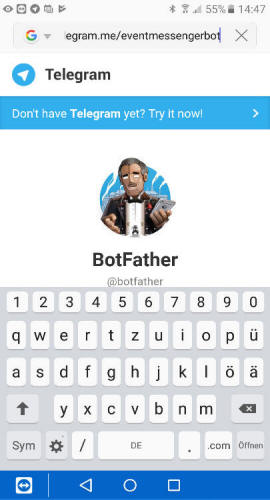
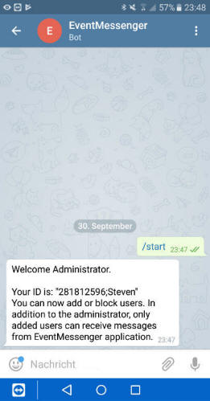

However, the bot needs the users ids prior sending messages to them. One can tell the bot this id just by sending a random message to it. You need to do so now. Otherwise the setup cannot proceed.
When the bot is contacted for the first time, it does not show up in the telegram contact list yet. To contact a new bot for the first time, simply call its name in the browser of your mobile device in the format: "telegram.me/NameOfYourBot"

Choose "Send Message" to transfer the contact to your installed Telegram App.

Click on "Start" or type a random message now to tell the bot you mobile device id. You should get a response like below.
